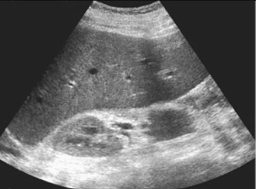
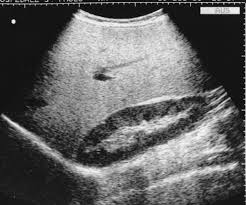

Glycogen storage disease
Introduction
Glycogen storage diseases (GSDs) are a group of inherited metabolic disorders characterized by abnormal glycogen metabolism. Hepatic involvement is prominent in types I (von Gierke disease), III (Cori disease), IV, VI, and IX. Ultrasound plays a key role in initial evaluation and monitoring of hepatic complications.
Ultrasound features
Characteristic sonographic findings in hepatic glycogen storage diseases:

1. Marked Hepatomegaly
- Liver length >15 cm in midclavicular line
- Homogeneous enlargement in early stages
- Most prominent in types I and III

2. Increased Parenchymal Echogenicity
- "Bright liver" appearance. Due to glycogen accumulation
- Differentiate from steatosis by clinical contex
Diagnostic Pearls
- Type I: Massive hepatomegaly + nephromegaly (kidneys also store glycogen)
- Type III: Hepatomegaly + muscle weakness (combined hepatic/muscular form)
- Liver texture often remains homogeneous until late stages
Disease-Specific Findings
| GSD Type | Enzyme Deficiency | Key Ultrasound Features |
|---|---|---|
| Type I (von Gierke) | Glucose-6-phosphatase | Massive hepatomegaly, nephromegaly, hepatic adenomas (after puberty) |
| Type III (Cori) | Glycogen debranching enzyme | Hepatomegaly, may develop cirrhosis in adulthood |
| Type IV | Branching enzyme | Cirrhosis with heterogeneous echotexture (progressive) |
| Type VI/IX | Liver phosphorylase/kinase | Mild hepatomegaly, often improves with age |
Hepatic Adenomas in GSD-I
Develop in 22-75% of GSD-I patients by 2nd-3rd decade:
- Appear as well-circumscribed hypoechoic masses
- Multiple lesions common (adenomatosis)
- Surveillance recommended every 6-12 months
- Risk of malignant transformation (hepatocellular carcinoma)
Monitoring and Complications
1. Adenoma Surveillance
- Baseline ultrasound at puberty in GSD-I
- Monitor for size increase (>5 cm higher risk)
- Contrast-enhanced US/CT/MRI for characterization
2. Progression to Cirrhosis
- Most common in GSD types III and IV
- Look for nodular surface, coarse echotexture
- Portal hypertension signs may develop
Ultrasound Protocol for GSD Monitoring
- Measure liver span in midclavicular line
- Document parenchymal echogenicity (compare to kidney)
- Screen for focal lesions (adenomas)
- Assess for signs of portal hypertension if cirrhotic
- Include kidney evaluation in GSD-I